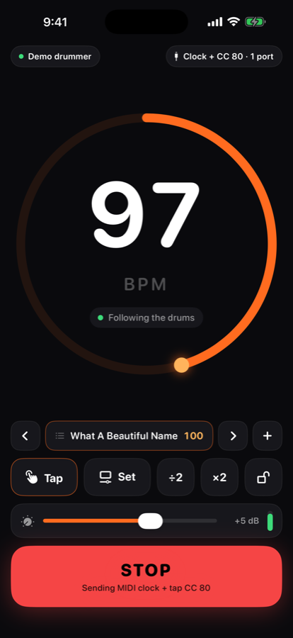
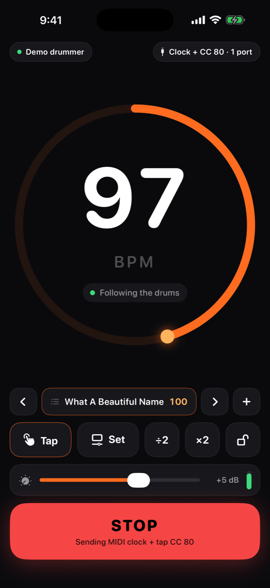
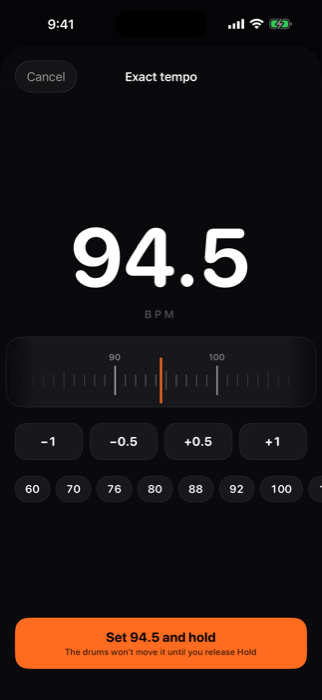
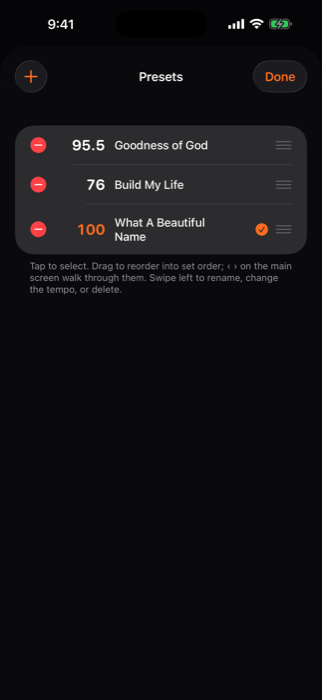
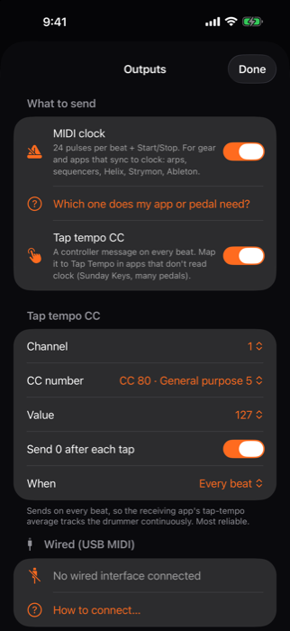
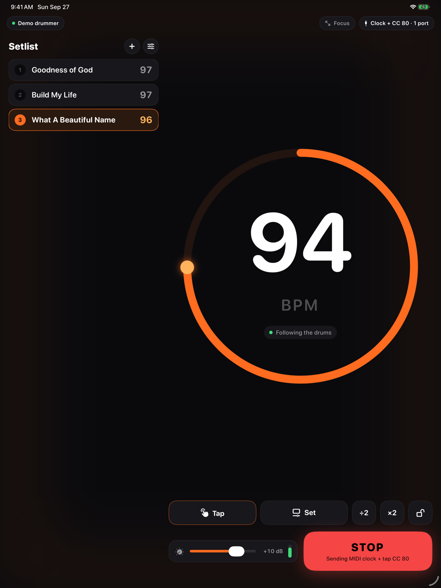
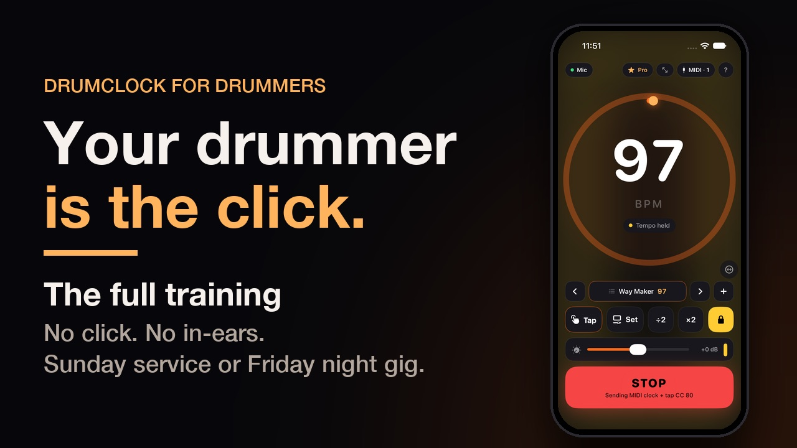

Most bands play to a click. Some musicians hate it, and plenty of bands have no in-ears, so they can't use one at all. DrumClock listens to the drums and sends the tempo to your keys rig, pedals and DAW — MIDI clock, tap tempo, or both. Delays and arps land on the drummer's time. No click track, no in-ears, no tapping.

Two kinds of band, same problem: the keys player's delays are at one tempo, the drummer is at another.
Most small churches, bar bands, school groups. No way to feed a click to the drummer, so time-based effects are guesswork. DrumClock makes the drummer the clock instead.
Pushing a chorus is the point. DrumClock follows a human drummer — push, lay back, fill, break — and the band's effects follow too. Nobody chases a metronome.
Sunday Keys reads tap tempo, not clock. DrumClock taps it for you on every beat. MIDI Learn once; the delays and arps are in time all service long.
Sunday Keys can't take MIDI clock. It has a tap tempo you can MIDI-Learn, which means somebody has to tap it — every song, every service — or the delays and arps run at whatever the last song was. DrumClock is the thing that taps it.
In DrumClock's Outputs. It sends a controller message on every beat, on the drummer's time. Clock can stay on too for anything else in the rig.
Sunday Keys → MIDI Learn → Tap Tempo, then tap “Send 4 test taps” in DrumClock. Done. The mapping sticks.
Every beat, DrumClock taps the tempo for you. Same iPad through the DrumClock port, or wired from the phone in the drum cage. Delays, arps and tremolo follow the drummer all service long.
Sunday Keys is a product of Sunday Sounds. DrumClock is an independent app and is not affiliated with or endorsed by Sunday Sounds.
Put a phone by the kit. That's the whole setup.
Three or four clicks on the sticks and the tempo is set, with beat one exactly where the drummer put it. Delays are right from the first downbeat.
The clock eases toward the drummer, never jumps. Hi-hat subdivisions, fills and ghost notes don't throw it. A break holds the last tempo until the drums return.
Name a tempo for every song, drag them into set order, step through with ‹ › or a page-turner pedal. Tap a song and the clock is there.
Drag a ruler to the number you want and hold it. Hold also freezes the clock through a rubato bridge or a drum solo.
A gain control with a clip meter. iOS automatic gain is off while DrumClock listens, so what you set is what it hears.
Step-by-step for every transport, plus what to set in Sunday Keys, Helix, Strymon, Ableton, MainStage and synth arps.




The app tells you the same thing before you pick one.
| Transport | Best for | Clock | Tap CC | Limits |
|---|---|---|---|---|
| Wired USB MIDI | Sunday morning. Interface + powered hub + 5-pin cable (or DIN-to-XLR through a snake channel). | Tight | Tight | Needs a hub that passes charging. |
| Same-device port | Sunday Keys on the same iPad. Pick “DrumClock” as the MIDI input. | Tight | Tight | Both apps share one audio interface. |
| Network MIDI | A Mac running Ableton or MainStage; long runs over Ethernet. | Ethernet good, Wi-Fi so-so | Fine | iPad-to-iPad needs an RTP-MIDI app on the receiver. |
| Bluetooth MIDI | Rehearsal. No cables. | Jitters | Fine | Short range; drops if a device sleeps. |
Setlist on the left, tempo on the right, big enough to read from the drum throne. Focus mode is just the number and the pulse for a music stand. Split View next to Sunday Keys works, and so does a hardware keyboard or foot pedal: space to start, arrows for the next song.

Everything is on for 14 days. After that, the free tier stays useful and Pro costs about what a cable does.
Eleven minutes from the drum throne: where the phone goes, counting it in, Hold, and building your set list. Sunday service or Friday night gig.

DrumClock for drummers: the full training (11 min, YouTube)
No, but it reads tap tempo. Turn on “Tap tempo CC” in DrumClock's Outputs, then MIDI Learn Tap Tempo in Sunday Keys while DrumClock sends test taps. Every beat after that, DrumClock taps it for you. The in-app guide walks through it.
No. If there's a count-off, DrumClock locks before beat one. If there isn't, it locks within a couple of bars like any beat tracker. Hold or a preset covers everything else.
Fills and ghost notes land between beats and are ignored. A break holds the last tempo; the clock keeps running and the tracker picks the beat back up when the drums return. For a rubato section, tap Hold.
Beat trackers can pick the wrong octave. ÷2 and ×2 fix it with one tap, and the tracker folds back into a sensible range on its own if a count-off was read at double time.
A class-compliant USB MIDI interface (Roland UM-ONE mk2, iConnectivity mio, or an audio interface with MIDI out), a USB-C hub with power passthrough, and a 5-pin cable. For long runs, DIN-to-XLR adapters through a spare channel of the stage snake.
No. Audio is analysed on the device and never recorded, stored or uploaded. No accounts, no ads.
Free to try for 14 days. iPhone, iPad and Android.
Download on the App Store Get it on Google Play